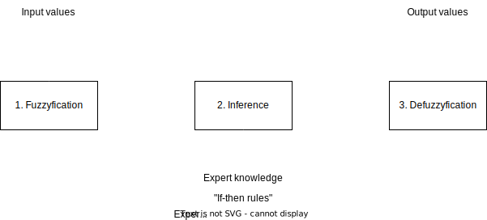
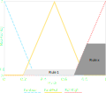

Fuzzy logic
Lecture: Introduction to Artificial Intelligence
Part 4
Learning objectives
In this section you will learn...
- The essentials of fuzzy logic
- Why fuzzy logic are important for AI
Review and discussion of last session
Book Assignment
Exercise: Use of the Square of opposition
- What is the contradictory of "Some US Presidents are former movie actors"?
- No US president is former actor
- What is the contrary of "All mass cults are kinetic art"?
- No mass cult is kinetic art
- What is the superaltern of "Some CIA employees are defectors"?
- All CIA employees are defectors
- What is the subcontrary of "Some policemen are not honest people"?
- Some policemen are honest people.
- What is the subaltern of "No logic students are con-artists"?
- Some logic students are not con-artists.
Algorithms and the halting Problem
- Explain the terms:
- Premises
- First-order logic
- Decideability
- Halting problem
- Algorithm
- What are the elements of an algorithm (as implemented in a computer program?)
- Premises
- An assumption or prerequisite that is used as a basis for an conclusion.
- First-order logic
- Extension to Propositional logic allowing to state relations and quantification.
- Decideability
- A property of a set is decideable, if there exists a decision-making process (an algorithm) that decides for each element of the set, if it has the property.
- Halting problem
- It is undecideable if a computer programm ends with any given input.
- Algorithm
- Structured approach to solve a given problem (mathematically sound and proven)
- Elements of algorithms:
- Input statements
- assignment statements
- output statements
- return statements
- branching statements
- looping statements
- sequences of the statements above
Elements of the Turing machine
- Explain:
- How does a Turing Machine work?
- What are the elements of a Turing machine?
Exercise: Quantifiers
| $\exists x \forall y ~ likes (y,x)$ | There is something that everyone likes |
| $\exists x \forall y ~ likes (x,y)$ | There is someone who likes everything |
| $\forall x \exists y ~ likes (y,x)$ | Everything is loved by someone |
| $\forall x \exists y ~ likes (x,y)$ | Everyone likes something |
| $\forall x ~ customer(x) \implies likes(bob,x)$ | Bob likes every customer |
Exercise: FOL Interpretation
Use the following interpretation $B_2$
- $B_2:c_1 \rightarrow 2, c_2 \rightarrow 3, c_3 \rightarrow 1, plus \rightarrow -, gr \rightarrow >$
we obtain:
$ 2 - 1 > 3 \implies 1 > 3$
$(1,3) \notin G$
Exercise: First-order logic
Expres which approaches lead to a correctly solved exercise:
- Some students found the exercise easy.
- Others were popular with the best attendees of their exercise group.
- Finally, there was the case of a student whose best friend was popular with all students and Mr. Smarty finds every exercise easy.
Approach
- Create an suitable interpretation.
- Translate the situational description into formulae.
- Combine the created formulae
Interpretation
- $x$ denotes the considered attendee (variable)
- $f_{1}(x)$ denotes his/her best friend (function)
- $c_1$ represents Mr. Smarty (constant)
- $f_{2}(x)$ returns the best attendee of $x$'s exercise group (function)$
- $p_{1}(x, y)$ means x is popular with $y$ (2-ary predicate)
- $p_{2}(x)$ means $x$ finds the exercise easy (unary predicate)
Formulas
- "Some students found the exercise easy
- $F_1 \equiv p_{2}(x)$
- "Others were popular with the best attendees of their exercise group."
- $F_2 \equiv \forall z ~ p_{1}(x, f_{2}(z))$
- Finally, there was the case of a student whose best friend was popular with all students and
Mr. Smarty finds every exercise easy.
- $F_{3} \equiv \exists x ~ \forall y ~ (p_{1}(f(x), y) \land p_{2}(c_1))$
Formulas
- "Each of the three cases leads to a correctly solved exercise."
- $F = F_{1} \lor F_{2} \lor F_{3}$
Reading 1:
A very brief introduction to Fuzzy Logic and Fuzzy Systems
- What is fuzzy logic?
- What is a fuzzy inference system?
- Explain the elements:
- Fuzzy set
- Fuzzyfication
- Fuzzy rules / rule base
- Fuzzy Inference
- Defuzzyfication
Reading 2:
How Fuzzy logic is applied in AIDiscuss in groups: What are the interrelations between fuzzy logic and AI based on the information in the article?
>Time: 15 Minutes.
Fuzzy logic
Fuzzy logic is an approach to computing based on "degrees of truth" rather than the usual "true or false" (1 or 0) Boolean logic.
Introductory example
The problem:
Change the speed of a heater fan based on the room temperature and humidity.
- The temperature control system has four settings:
- Cold,Cool,Warm, and Hot
- Humidity can be defined by:
- Low, Medium, and High

Vague and subjective definitions
- Knowledge is often verbally expressed.
- imprecise and subjective perception
Forms of fuzzyness:
- Stochastically fuzzy
- Occurrence of an event not predicted with certainty
- Lexically fuzzy
- Uncertainty regarding the interpretation of a proposition: What does "cold" means?
- Informally fuzzy
- Particluar terms bear subjective definitions, e. g. Trust
Representation of linguistic variables
Classical / Boolean
Membership of an element to a particular set is definite
| Temp. value | Temp. class |
|---|---|
| 9 | Cold |
| 10 | Cold |
| 11 | Cool |
Fuzzy logic
Membership is described through the mapping of the linguistic variable by a normalized membership value.
Towards a fuzzy set
- Membership value assignment unpractical:
- 7.9 does not at all belong to class "Cool", 8.0 does.
Fuzzy-set (Zadeh)
The membership of an element to a set is not only described with 0 for being not a member and 1 for being a member, but each value in the intervall $[0,1]$ describes the degree of membership described by a membership function $\mu$.
Operations with Fuzzy sets
Not
- Current temperature = 9.5 centigrade
- membership fuzzy set cold = 0.85
- Not operation:
- Subtract from 1 : 1 - 0.85 = 0.15
- Temp.=9.5 Degrees belongs to 0.15 not to the fuzzy set cold
$\neg \mu(x) = 1 - \mu(x)$
Or
Or is interpreted as the maximum operator
$\mu(x) = max[F_1(x),F_2(x)]$
And
And is interpreted as the minimum operator
$\mu(x)=min([F_1(x), F_2(x)]$
Fuzzy Control Operation
Knowledge as If-then-rules
Knowledge expressed as if-then rules:
If humidity low and temperature cool then set fan speed to low
Steps of fuzzy control
Fuzzyfication of input values
- Definition of fuzzy sets
- Should cover the whole domain
- Best practice: Odd number of fuzzy sets in the domain (3,5,7)
- Negative-big (NB),negative-small (NS),zero (Z),positive-small (PS), positive-big (PB)

Inference
- If-then-rules need to be defined (expert knowledge)
- If: premises (often: AND combinations of input values)
- Then: conclusion
- (Often: "Or"-combination of corresponding rules)
If humidity low and temperature cool then set fan speed to low,
or if humidity medium and temperature cool then set fan speed to low.
Inference: Evaluation of premises
- Combination of the input values according to if-then rules and operators
- Often: And-combination (minimum operator)
- Input values:
- Temp = 9: $\mu$(Cold) = 0.3, $\mu$(Cool) = 0.8, $\mu$(Warm) = 0;
- Humidity = 0.1: $\mu$(Low) = 0.4
- Inference Rule 1: "If humidty low and temperature cold then fan speed medium."
- $\implies min(\mu(Low),\mu(Cold)) = min (0.4,0.1) = 0.1$
Evaluation of premises - graphical
Inference: Evaluation of conclusion (Implication)
- In Fuzzy-logic: Conditions may apply partly!
- To what extent?
The Minimum procedure
- Degree of fulfillment = Minimum of premise and conclusion
- Conclusion is cut-off at minimum of premise fulfillment
Inference: Summarise the rules (Accumulation)
- Usually multiple rules respond to the input values and are evaluated and concluded!
- Rules are disjunctive (or) linked
Rule 1 (see above) and another (not shown) has been evaluated and concluded.
The or-combination (maximum) leads to single plane (rule 1 and rule x).
Defuzzyfication
- Deduction of a concrete, real-world usable result
- Often used: Centroid method (Geometric centre of the plane)
Credits
Giving Credits to the sources

Image Source
Exercise
Here the description of the exercise goes. The Task description and so on.
Support Vector Machines (SVM) Overview and Demo using RTime: 20 Minutes
Two-column layout
Column 1
Column 2